Transmovil
Integrantes
Integrantes
- -Carolina Bechara
- -Maria Alejandra Santa
- -Isabella Torres
RUTA CASTILLA
263: Sentido Barrio – Centro: Se dirige hacia el oriente por calle 101 hasta la cra 74, continua al oriente por la calle 101 hasta la cra 69 (unidad deportiva de castilla), por esta al sur hasta la calle 94, por esta al oriente hasta la cra 68, por esta al sur hasta la calle 93, por esta al oriente hasta la cra 65 por donde sigue su recorrido habitual.
Sentido Centro – Barrio: Sube por la cra 65 hasta la calle 93 por esta al occidente hasta la cra 67, por esta hacia al norte hasta la calle 100, por esta al occidente hasta la carrera 68, por esta al norte hasta la calle 101, por esta al occidente hasta la cra 74 donde sigue su recorrido habitual.
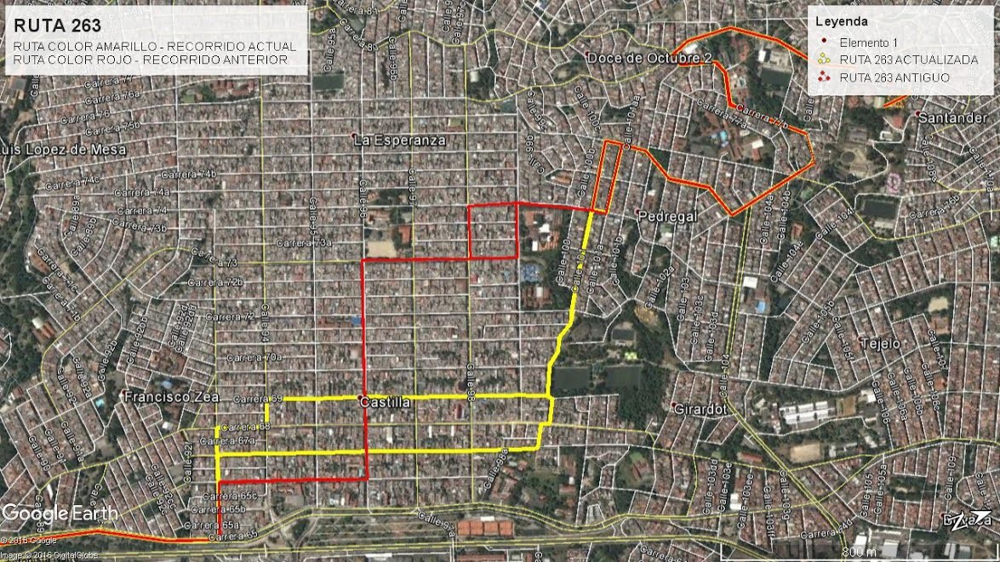
261: Sentido Barrio – Centro: Se dirige hacia al sur por la cra 73 hasta la calle 93, por esta al oriente hasta la cra 70, por esta al suroriente por la calle 92g hasta la cra 68, por esta hacia al sur hasta la cra 67 donde continua su recorrido habitual por la cra 65.
Sentido Centro – Barrio: Sube por la cra 65 hasta la calle 91e, por esta hacia al occidente hasta la cra 66, por esta al norte hasta la calle 92f, por esta al occidente hasta la calle 92ee, por esta al occidente hasta la cra 67, por esta al norte hasta la calle 92g, por esta al occidente hasta la calle 93, por esta al occidente hasta la cra 73 donde continua su recorrido habitual.
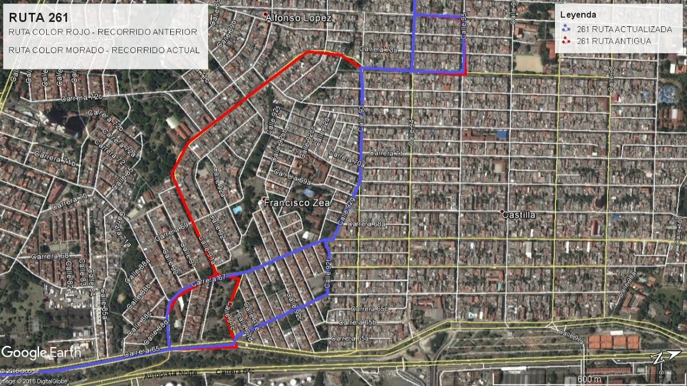
TRONCAL 270
Inicia su recorrido en la calle 119 con carrera 65, por ésta hacia el sur hasta empalmar con la carrera 67, por ésta al sur hasta la calle 103D, por ésta al oriente hasta la carrera 65, por ésta al sur hasta la calle 84, por esta al sur hasta la carrera 64c (glorieta terminal del norte), por ésta al sur hasta la carrera 64c con calle 67 (puente de Coca-Cola), por ésta al oriente hasta la calle 58 (plaza minorista) y empalmar con la carrera 57, por ésta al sur hasta la calle 51 con carrera 57 (Sena Regional), por esta al sur hasta calle 44 (San juan), por ésta al oriente hasta la carrera 46 (Av. Oriental), por esta al sur a empalmar con la carrera 43A (Av. Poblado) por esta al sur hasta calle 33 (San Diego), por ésta al occidente hasta la carrera 54), por esta al occidente hasta autopista regional, por esta al norte a tomar la oreja nororiental del puente Horacio Toro para empalmar con la carrera 64c (Autopista norte), por esta al norte a tomar la oreja de la feria de ganados y empalmar con la calle 111a. por esta al occidente hasta la carrera 64c autopista norte, por esta al sur hasta calle 104, por esta al norte hasta la carrera 67 y empalmar con la carrera 65, por esta al norte hasta la calle 119 (sitio de inicio de recorrido).
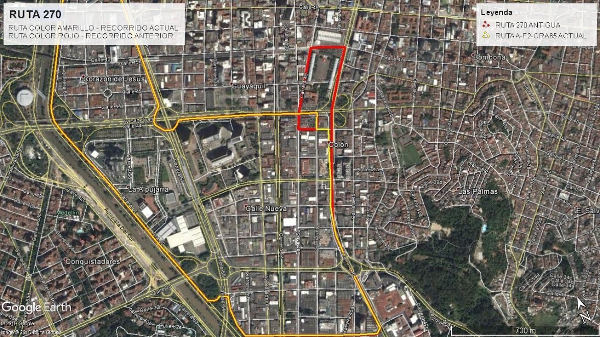
TRONCAL CRA 65 (Boyacá las Brisas)
Inicia su recorrido en la calle 119 con carrera 65, por ésta hacia el sur hasta empalmar con la carrera 67, por ésta al sur, hasta la calle 103D, por ésta al oriente hasta la carrera 65, por ésta al sur hasta tomar por el deprimido del intercambio Punto Cero tomando la calle 67, por ésta al oriente hasta la carrera 52, por ésta al sur hasta la calle 57B, por ésta al oriente hasta la carrera 51D, por ésta al sur hasta tomar la glorieta de la estación Prado tomando la carrera 51, por ésta al norte hasta la calle 57B, por ésta al oriente empalmando con la carrera 46, por esta al sur hasta la calle 44, por ésta al occidente hasta la carrera 57, por ésta al norte empalmando con la tomando carrera 55, por ésta al norte hasta la calle 67, por ésta al occidente para tomar deprimido de Punto Cero y empalmar con la diagonal 64E, por ésta hacia el norte hasta la carrera 65, por ésta al norte hasta empalmar con la carrera 67, por ésta al norte empalmando con la carrera 65, por ésta al norte hasta la calle 119 donde finaliza el recorrido.
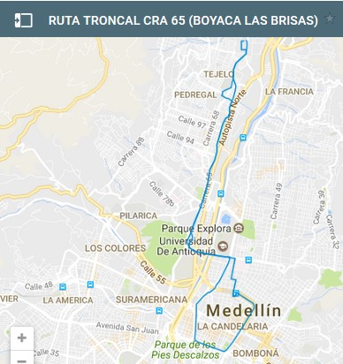
TRONCAL CRA 73 (Castilla - Parque De Los Periodistas)
Inicia su recorrido en la calle 102 con carrera 72, por ésta hacia el norte hasta la calle 102B, por ésta al occidente hasta la carrera 74, por ésta al sur a empalmar con la calle 98, por ésta al oriente hasta empalmar con la carrera 73, por ésta al sur hasta la calle 91A, por ésta hacia el oriente hasta la carrera 67, por ésta hacia el sur hasta la carrera 65, por ésta al sur empalmando con la diagonal 64E hasta la carrera 64C, por ésta al sur empalmando con el Puente Horacio Toro, hasta la calle 58, por ésta al oriente hasta la carrera 47, por ésta al sur hasta la calle 57, por ésta al oriente hasta la carrera 43, por ésta al sur hasta la calle 52, por ésta al occidente hasta la carrera 50, por ésta al norte hasta la calle 56, por esta al occidente hasta la carrera 51, por ésta al norte hasta llegar a la glorieta de la estación del metro Hospital, y empalmar hacia el occidente con la calle 67 (Av. Barranquilla), por esta hasta tomar deprimido de Punto Cero y empalmar con la diagonal 64E, por ésta hacia el norte hasta empalmar con la carrera 65, por ésta al norte hasta empalmar al occidente con la calle 91C, por ésta al occidente hasta la calle 91A, por ésta al occidente hasta la carrera 73, hasta empalmar al norte con la calle 99, por ésta al occidente hasta empalmar con la carrera 74, por ésta al norte hasta la calle 102B, por ésta al oriente hasta la carrera 72, por ésta al sur hasta la calle 102 donde finaliza su recorrido.
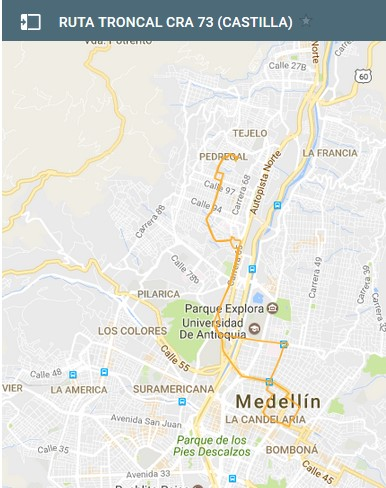
SISTEMA INTEGRADO
LÍNEA A
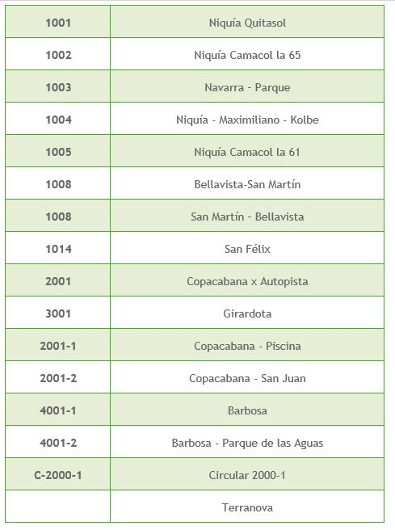
LÍNEA B
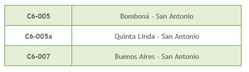
LÍNEA J
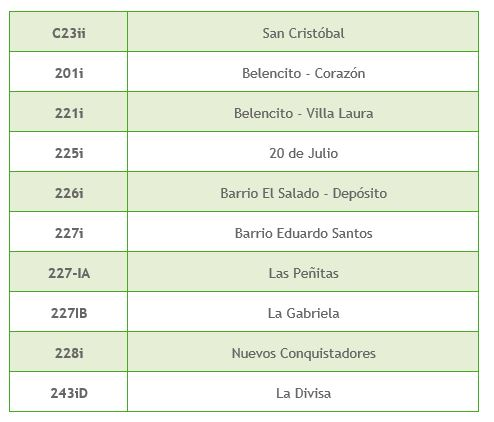
LÍNEA K
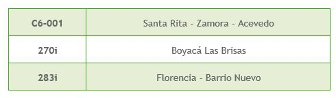
SISTEMA INTEGRADO - LÍNEA T-A
• SAN ANTONIO Carrera 51A 46-08, Medellín.
• SAN JOSÉ
• PABELLÓN DEL AGUA EPM
• BICENTENARIO
• BUENOS AIRES
• MIRAFLORES
• LOYOLA
• ALEJANDRO ECHAVARRÍA
• ORIENTE
RUTA PALENQUE-ROBLEDO
Ruta 250 Micro Curazao:
Curazao – Villa Flora – Universidad ESUMER – Monte Loro – Parque de Robledo – Éxito de Robledo – Colegio Mayor de Antioquia – San Germán – Estadio Atanasio Girardot – Éxito de Colombia – Alpujarra – Los Huesos – Bolívar – Estación San Antonio – Parque de Berrío – Calle Colombia.
Ruta 250 Micro Robledales:
Santa maría de Robledo – Robledales – Monte Loro – La Pola – Parque de Robledo – Éxito de Robledo – Colegio Mayor de Antioquia – San Germán – Estadio Atanasio Girardot – Éxito Colombia – Alpujarra – Los Huesos – Bolívar – Estación San Antonio – Parque de Berrío – Calle Colombia.
Ruta 250 Bus Robledo – Villa Flora:
Brisas de Robledo – Bello Horizonte – Villa Flora – Universidad ESUMER – Monte Loro – Parque de Robledo – Éxito de Robledo – Colegio Mayor de Antioquia – San Germán – Estadio Atanasio Girardot – Éxito de Colombia – Alpujarra – El Palo con San Juan – El Palo con Ayacucho – Plazuela Nutibara – Avenida de Greiff – Calle Colombia.
Ruta 250 A La Huerta:
La Huerta – La Campiña – Palenque – Doña María de Robledo – Colegio Mayor de Antioquia – San Germán – Estadio Atanasio Girardot – Éxito de Colombia – Alpujarra – El Palo – Plazuela Nutibara – Avenida de Greiff – Calle Colombia.
Ruta 250 A Moravia:
La Huerta – Tulipán – La Campiña – Palenque – El Cortijo – Doña María de Robledo – Éxito de Robledo – Colegio Mayor de Antioquia – ITM – El Volador – SURA – Cementerio Universal – Terminal del Norte – Parque Norte – Carabobo – Avenida de Greiff – Calle Colombia.
Ruta 250 A La Campiña – Mirador del Valle – Pajarito:
Metrocable Aurora – Villa Suramericana – La Montaña – Las Hamacas – Pajarito – La Campiña – Palenque – Doña María de Robledo – Colegio Mayor de Antioquia – San Germán – Estadio Atanasio Girardot – Éxito de Colombia – Alpujarra – El Palo – Plazuela Nutibara – Avenida de Greiff – Calle Colombia.
Ruta 251 Robledo – Santa Margarita:
Doña María de Robledo – Alpujarra – Parque de Berrío – Éxito de Colombia.
Ruta 252 Ferrini – Kennedy:
Iglesia de Kennedy – La 80 con La 80 – Doña Maria de Robledo – Éxito de Robledo - La 80 con Colombia – Estadio Atanasio Girardot – Éxito de Colombia – Alpujarra – Los Huesos – Bolivar – Colombia con Cundinamarca.
Ruta 253 Robledo Aures – Civiton:
Colegio Jesús Rey – Universidad santo Tomás – San Germán – Estadio Atanasio Girardot – Éxito de Colombia – Plaza Minorista – Plaza de Zea – Calle Colombia.
Ruta 260 Micro López de Mesa:
La 80 con la 80 – Coca Cola – Universidad de Antioquia – Antiguo Colombiano – Puente Horacio Toro – Coca Cola.
Ruta 260 Bus López de Mesa:
La 80 con la 80 – Coca Cola – Universidad de Antioquia – Bolivar con la Avenida de Greiff – Juan del Corral con Barranquilla.
Ruta 267 Bello Horizonte:
La 80 con la 80 – ITM – Éxito de Colombia – Alpujarra – El Palo – Éxito de San Antonio – San Juan con la 65.
Ruta 285 París – Los Colores:
12 de Octubre – Miramar – La 80 con la 80 – Universidad Santo Tomás – Doña María de Robledo – Éxito Robledo – Centro Comercial Mediterráneo – Mercados Madrid – Los Colores – Estadio Atanasio Girardot – Éxito de Colombia – Alpujarra – Los Huesos – Cundinamarca con Colombia – Parque de Berrío – Calle Colombia – Éxito de Colombia.
INTEGRADOS
Ruta 250 I (Integrada al metro): Santa María de Robledales – Estación Suramericana – Monte Loro – Parque de Robledo – Colegio Mayor de Antioquia – San Germán – Estación Estadio – Estación Suramericana.
Ruta 250 I (Integrada al metro): Robledo Brisas – Estación Floresta – Monte Loro – Parque de Robledo – Éxito de Robledo – Colegio Mayor de Antioquia – Centro Comercial Mediterráneo – Mercados Madrid – Estación Floresta.
Ruta 250 II: Las Hamacas – Carretera al mar – Estación Aurora
Ruta 250 III: Estación Aurora – La Campiña – Tulipanes – La Huerta
SAN CRISTOBAL
RUTA 255:
Corregimiento San Cristóbal- Vía al mar (vieja) – universidad Esumer – facultad de minas – calle 80 – Calle Colombia – éxito Colombia - Centro – avenida de Greiff
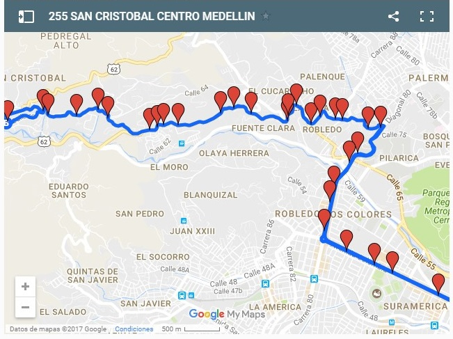
RUTA 255:
Corregimiento San Sebastian de Palmitas – Medellín y Medellín – Corregimiento San Sebastian de Palmitas
RUTA 255I:
Ruta Integrada a la estación metro cable La Aurora
BELÉN
Son las áreas de la ciudad de Medellín, conformada por la Comuna 16 (Belén) y los barrios Conquistadores, UPB, Laureles, Las Acacias y La Castellana de la Comuna 11 de Medellín.
RUTA 170 BELEN LAS PLAYAS
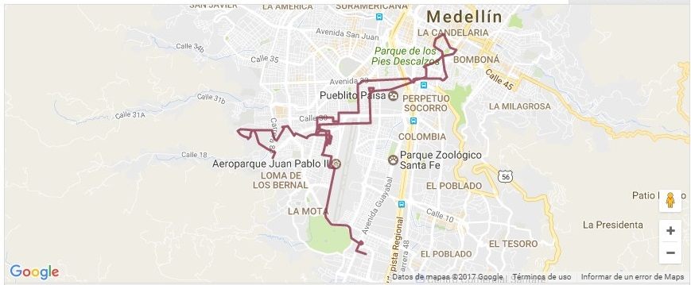
RUTA 172 BELEN LA GLORIA:
Avenida san juan – Avenida Carabobo – Estación sur americana – La candelaria
RUTA 178 BELÉN LA NUBIA Aeroparque juan pablo ll – avenita 33 – plaza mayor – parque zoológico santa fe – ciudad del rio – los sauces – obrero – el dorado
METROPLUS
Línea 1
• Estación Universidad de Medellín
• Estación Los Alpes
• Estación La Palma
• Estación Parque de Belén
• Estación Rosales
• Estación Fátima
• Estación Nutibara
• Estación Industriales
• Estación Plaza Mayor
• Estación Cisneros
• Estación Minorista
• Estación Chagualo
• Estación Ruta N U de A
• Estación Hospital
• Estación San Pedro
• Estación Palos verdes
• Estación Gardel
• Estación Manrique
• Estación Las Esmeraldas
• Estación Berlín
• Estación Parque de Aranjuez
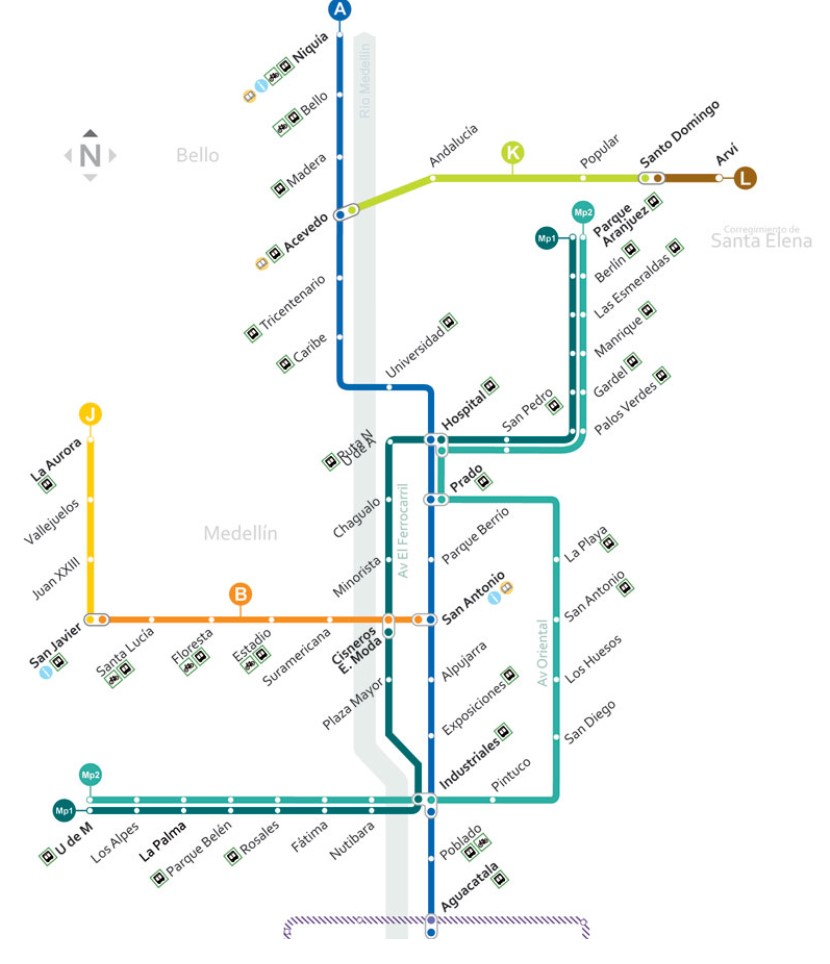
Línea 2
• Estación Universidad de Medellín
• Estación Los Alpes
• Estación La Palma
• Estación Parque de Belén
• Estación Rosales
• Estación Fátima
• Estación Nutibara
• Estación Industriales
• Estación Barrio Colombia
• Estación Barrio San Diego
• Estación Barrio Colón
• Estación San Jose
• Estación La Playa
• Estación Catedral Metropolitana
• Estación Prado
• Estación Hospital
• Estación San Pedro
• Estación Palos verdes
• Estación Gardel
• Estación Manrique
• Estación Las Esmeraldas
• Estación Berlín
• Estación Parque de Aranjuez
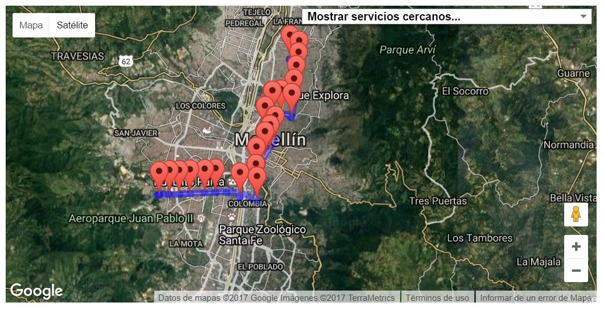